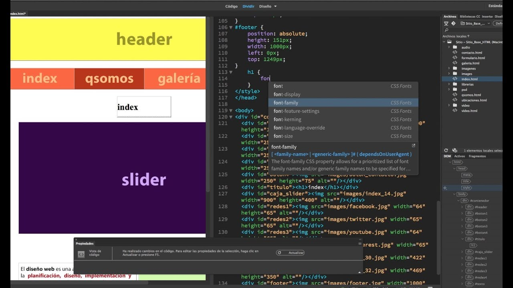
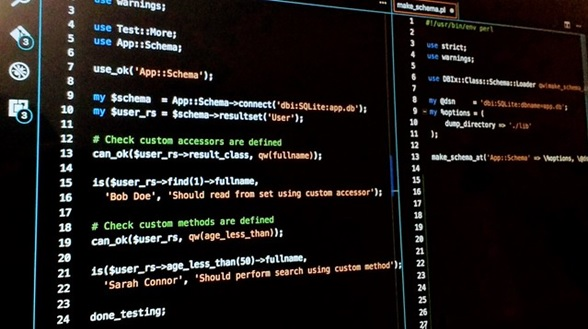
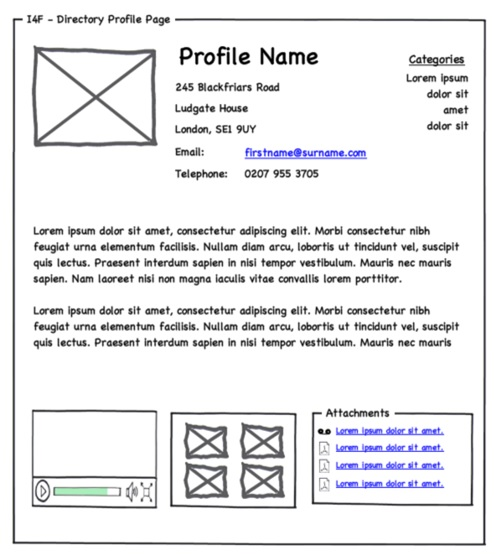
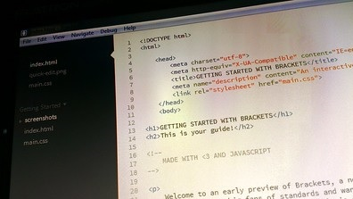
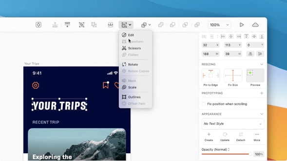

Este programa es una de las alternativas más populares y mejor valoradas para realizar cualquier tipo de proyecto que involucre HTML y CSS (principalmente).
Dreamweaver es muy atractivo y se ha mantenido en la cima del desarrollo web porque trabaja basándose en un modelo What You See Is What You Get (WYSIWYG), lo cual significa que puedes crear de manera visual muchas de las cosas que normalmente llevarían varías líneas de código, sin siquiera escribir una comando.
Y si tu nivel de programación es más avanzado, también puedes aprovechar directamente el editor de código de Dreamweaver y recibir sugerencias, mientras observas cómo va tomando forma el sitio web en una pantalla dividida.
Inclusive puede ahorrarte mucho tiempo gracias a las integraciones que tiene con los demás productos de Adobe como Photoshop e Illustrator.

Características principales de Dreamweaver:
Es un programa que te permite crear páginas web y aplicaciones.
Puedes diseñar visualmente o diseñar usando HTML, CSS o JavaScript.
Te permite crear y probar diseños en los CMS más populares: WordPress, Drupal y Joomla.
Tiene la función de sugerencia y completado de código. Cuando empiezas a introducir código, enlista los posibles tags que podrían continuar la línea de código que comenzaste a introducir.
Visual Studio Code
Aunque Dreamweaver o Sublime Text son los programas con licencia preferidos por desarrolladores, su precio puede representar una barrera para pequeños negocios o emprendedores que solamente requieran su uso ocasional.
Afortunadamente, una alternativa de código abierto es Visual Studio Code, que permite a usuarios avanzados realizar muchas de las tareas que normalmente se hacen con editores de pago, pero sin desembolsar un solo centavo.

Características principales de Visual Studio Code:
Es gratuito.
Tiene soporte nativo para distintos lenguajes como HTML, CSS y JavaScript.
Puedes visualizar varios códigos al mismo tiempo.
Tiene funciones que facilitan el trabajo de los desarrolladores, como: resaltado de sintaxis, coincidencia de llaves, sangría automática, atajos de teclado, entendimiento semántico y más.
Balsamiq
En las primeras etapas de la creación de páginas web, es importante que tengas una idea clara de cómo será la navegación en tu sitio web, así como el lugar donde vas a colocar ciertos textos y fotos, entre otros detalles.
En ese sentido, Balsamiq es una gran herramienta que te permite hacer el proceso de diagramación (wireframes en inglés) de la manera más sencilla posible, simulando prácticamente cualquier pantalla de sitio web, software de escritorio o aplicación de smartphone, mediante una interfaz intuitiva y fácil de usar.

Características principales de Balsamiq: Facilidad para hacer wireframes que permiten a los creadores de páginas web enfocarse en la estructura y el contenido, y no en los detalles que se resuelven hasta el proceso de diseño.
Colaboración en tiempo real entre usuarios, para que desarrolladores y diseñadores web puedan hacer bosquejos de sus ideas y compartirlos entre sí.
Tiene dos modalidades (Sketch Skin y Wireframe Skin) que te permiten alternar fácilmente entre el bosquejo o la presentación formal.
Brackets.io
Es otro editor de código abierto que puedes descargar de manera gratuita para instalar en tu computadora. Al abrirlo, verás que tienes un documento vacío: digamos que es un lienzo en blanco que puedes trabajar a tu manera.
Para los desarrolladores, la principal ventaja de este software es que está escrito con una combinación de HTML, CSS y JavaScript.

Características principales de Brackets.io: Algunos usuarios prefieren su interfaz de usuario incluso sobre Sublime Text, debido a que es agradable, es ligera y extremadamente personalizable.
Tiene plugins y temas gratuitos.
Se puede integrar con Photoshop.
Sketch
Es una aplicación de Mac específicamente creada para diseñadores de UX, que les permite enfocarse en crear diferentes versiones de un diseño, en vez de preocuparse por los aspectos más técnicos de la experiencia de usuario.
Las reseñas son tan buenas, que muchos profesionales y grandes empresas han decidido usarla más que Photoshop.

Características principales de Sketch: Todo lo que hagas en Sketch está basado 100% en vectores, lo cual significa que tu trabajo de diseño nunca perderá calidad sin importar el tamaño que necesites.
Puedes exportar un diseño con diferentes resoluciones y formatos, lo cual facilita mucho las cosas, no solo para trabajar en distintos dispositivos, sino también para compartir tu trabajo con otras personas sin tener que compartir archivos demasiado pesados.
Puedes copiar los atributos CSS de cualquier diseño que realices, así que también facilita el trabajo de los desarrolladores front-end.